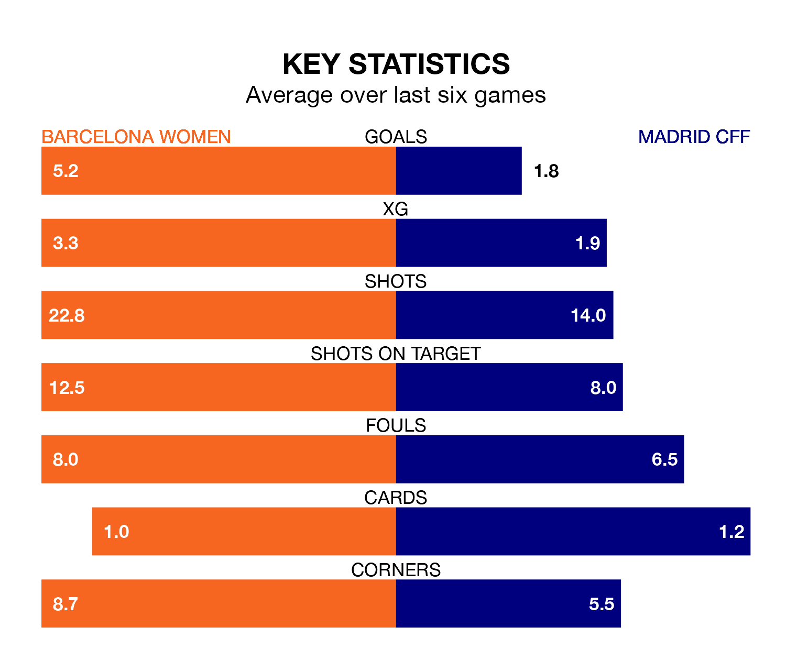

Two of Liga F's top sides face each other at Estadi Johan Cruyff in Wednesday's late kick-off, when table-topping Barcelona Women host third-placed Madrid CFF.
Barcelona have picked up 23 wins and one draw from 24 games so far this season, and sit 24 points above the visitors going into the 5pm match.
Madrid CFF, meanwhile, have won 14 and drawn four, picking up 46 points.
With 106 goals in 24 games so far this season, Barcelona are the league's highest scorers with 4.4 goals per game. And they are conceding fewer than average, letting in eight goals at a rate of 0.3 per game.
Madrid CFF are also above average scorers, with 2.2 goals per game, compared to a league average of 1.6. They have conceded 1.6 goals per game.
The home side are in exceptional form in Liga F, with six wins and no losses from their last six games.
With three wins and a draw over that period, the visitors' form is much worse – they have taken 10 points from 18, compared to Barcelona's 18.
In Caroline Graham Hansen and Salma Paralluelo Ayingono, Barcelona have the league's sharpest shooters so far this season. They have notched 17 goals each.
Madrid CFF's top scorer, with eight goals in 14 games, is Racheal Kundanaji.
In the last 10 years, Barcelona and Madrid CFF have played each other on 13 occasions. Barcelona won 12 of them and Madrid CFF one.
On average, Barcelona scored 4.1 goals and Madrid CFF 0.5 in those matches.
Their last meeting was on September 16, when Barcelona won 2-0 away.
Barcelona's last match was on April 24, a 4-2 win against Levante Las Planas, with Claudia Pina Medina (two), Bruna Vilamala Costa and Marta Torrejón Moya getting the goals for Barcelona.
Madrid CFF beat Athletic Club Women 2-1 last time out, on April 20, with Luany Vitória da Silva Rosa and Maite Zubieta (own goal) on the scoresheet.
Updated: 07:59 (UTC), 26/04/24